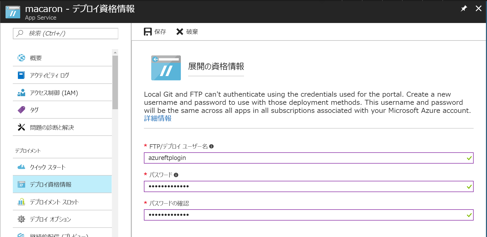
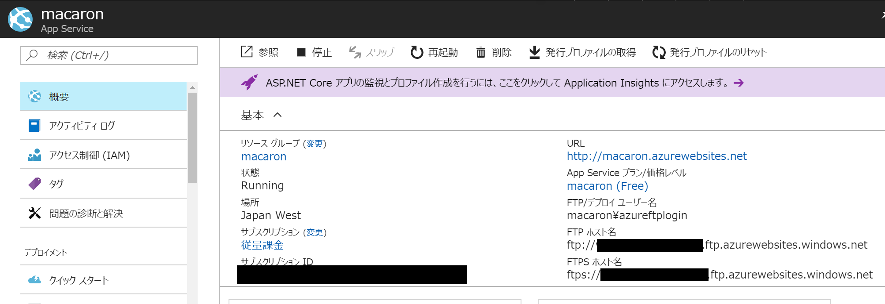
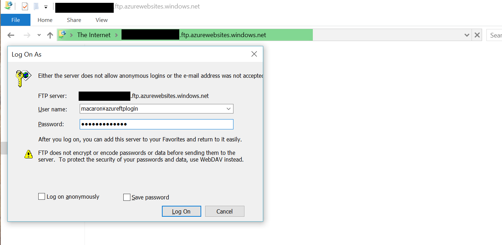

Azure App Service にSFTPでログインするときのユーザー名
2017-07-30 15:25:01 +0900 JST
Categories: Azure
ちゃんとよく見ればいいってだけの話です。
Azure App Service ではデプロイする領域にSFTP(FTP)ではいることができます。デプロイパイプラインを組む前に、App Service へファイルを送信したいときに使えます。
FTPログイン設定

Azureのポータルから設定したいApp Serviceを開き、 デプロイ資格情報 を選択します。
FTPでログインするユーザー名とパスワードをここで作成します。

概要に戻るとSFTPのアドレスができてますので、これをコピーします。あとユーザー名ですが、先ほどの azureftplogin ではなく、 macaron\azureftplogin なことに気を付けてください。
頭にmacaronとついているのはこの App Service の名前がmacaronだからだと思います。
あとはWindows環境であれば、エクスプローラーにSFTPのアドレスを貼り付けて、上のユーザー名と設定したパスワードを入力すればログインできます。

site/wwwroot/ にデプロイして App Service を再起動すると反映されます。kuduを使うとこういったデプロイを自動でしてくれますが、FTPでのデプロイの場合はweb.configも自分で用意する必要がある点に注意してください。